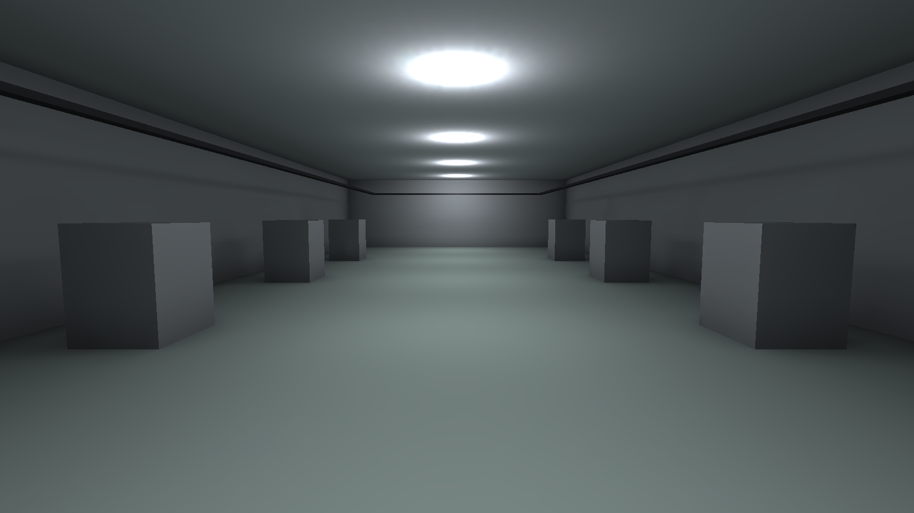

Phase 6 · Station 01
테스트: Unity Test Framework & asmdef
Phase 2에서 DesCore를 UnityEngine 없이 콘솔에서 몇 초 만에 돌려 검증하려고 만들었다. 그 검증을 사람 눈이 아니라 코드가 자동으로, 매번 하게 만드는 것이 테스트다. 그리고 여러 명이 공유하는 대형 Unity 프로젝트에서 테스트를 돌리려면, 먼저 코드를 어셈블리로 나눠야 한다 — 이번 스테이션은 그 둘을 함께 세운다.
왜 자동화 테스트인가 — 회귀와 재현성
신입이 대형 코드베이스에 처음 코드를 얹을 때 가장 무서운 것은 "내가 고친 것이 다른 무언가를 몰래 망가뜨렸을까"라는 불안이다. 회귀 테스트는 그 불안에 답하는 그물이다 — 한 번 고친 결함이 되살아나지 않는지, 잘 돌던 기능이 조용히 깨지지 않았는지 코드가 매번 자동으로 확인한다. 사람이 손으로 재확인하는 것과 다른 점은 딱 하나, 지치지도 잊지도 않는다는 것이다.
Phase 2에서 "재현 안 되는 시뮬레이터는 디버깅이 불가능하다"며 결정성을 설계에
못 박았다 — 같은 시드면 같은 결과, 동시각 사건은 일련번호(SimEvent.Sequence)로
순서를 고정한다. 그 결정성 덕에 시뮬레이션 코드도 테스트할 수 있다. 결과가 실행마다 흔들린다면
"기대값 == 실제값"이라는 단언 자체가 성립하지 않기 때문이다. 재현성은 디버깅의 전제일 뿐 아니라
테스트의 전제이기도 하다.
NUnit 기초
Unity Test Framework는 NUnit을 그대로 쓴다. 그래서 콘솔에서
dotnet test로 익힌 문법이 Unity 에디터로 고스란히 이어진다 — 앞의
examples/phase2-descore/DesCore.Tests에서 쓴 코드가 정확히 그 예다.
핵심 어휘는 넷뿐이다.
[Test] // 이 메서드는 하나의 테스트다
public void UtilizationMatchesHandComputedValue()
{
var sim = new Simulation();
var resource = new SimResource(sim, "M", 1);
sim.Schedule(0.0, () => resource.Request(() => { })); // t=0 점유
sim.Schedule(10.0, () => resource.Release()); // t=10 해제
sim.Run(20.0);
// busy 10 / (Now 20 * cap 1) = 0.5 — 손으로 계산한 값과 대조한다.
Assert.That(resource.GetUtilization(), Is.EqualTo(0.5).Within(1e-9));
}
[Test]
public void ReleaseWithoutRequestThrows()
{
var sim = new Simulation();
var resource = new SimResource(sim, "M", 1);
// 예외가 나야 정상 — 안 나면 그것이 실패다.
Assert.Throws<InvalidOperationException>(() => resource.Release());
}[Test]— 이 메서드가 테스트임을 표시한다.[TestCase(a, b)]를 붙이면 같은 로직을 여러 입력으로 파라미터화할 수 있다.Assert.That(actual, Is.EqualTo(expected).Within(delta))— 부동소수는 정확히 같을 수 없으므로 허용오차Within으로 비교한다.Assert.Throws<T>(...)— "이 호출은 반드시 이 예외를 던져야 한다"를 단언한다. 경계·오용의 검증이다.- 픽스처 —
[SetUp]/[TearDown]은 각 테스트 직전·직후에 공통 준비·정리를 돌려, 모든 테스트가 늘 같은 초기 상태에서 출발하게 한다.
EditMode vs PlayMode
Unity 테스트는 EditMode와 PlayMode 두 갈래다. 둘을 가르는
기준은 하나 — 프레임(시간)이 흘러야 하는가다. 순수 로직(그래프 탐색, 배차 선택,
통계 계산)은 프레임이 필요 없으니 EditMode에서 즉시 돌리고, 배속 브리지처럼 "프레임이 흘러야"
관측되는 것은 PlayMode에서 yield return null로 프레임 경계를 넘으며 검증한다.
| 구분 | 실행 컨텍스트 | 프레임·시간 | MonoBehaviour 생명주기 | 속도 | 이 페이즈의 예 |
|---|---|---|---|---|---|
| EditMode | 에디터 도메인에서 즉시 | 프레임 없음(Update 안 돎) |
수동(직접 호출) | 빠름 | RailGraph 다익스트라 · 최근접 배차 선택 |
| PlayMode | 실제 재생 루프 | 프레임 진행(yield) |
Awake/Update 실제 호출 |
느림 | 배속 브리지 시간 전진([UnityTest]) |
asmdef — 어셈블리 분리
Unity는 asmdef가 없으면 프로젝트의 모든 스크립트를 Assembly-CSharp
하나로 컴파일한다. 그러면 세 가지가 무너진다 — 한 줄만 고쳐도 전부 재컴파일되고,
"코어는 UI에 의존하면 안 된다" 같은 의존 방향을 강제할 수 없으며, 테스트 코드가
프로덕션 빌드에 섞인다. asmdef는 폴더 서브트리를 하나의 DLL로 선언하는 파일이고, 핵심 규칙은
이것이다: 하위 폴더에 asmdef가 있으면 그 서브트리는 부모 asmdef에서 떨어져 나온다
(중첩 override). 이 규칙이 Runtime/Editor/Tests 분리의 메커니즘이다.
실무의 "3분할"은 사실 네 개의 어셈블리로 갈린다. PlayMode 테스트는 Editor 전용 어셈블리에서 실행할 수 없으므로(플랫폼 설정이 EditMode/PlayMode를 가른다), Tests가 EditMode용과 PlayMode용 두 어셈블리로 물리적으로 나뉜다.
| 어셈블리 | 폴더 | 참조하는 것 | 플랫폼 | 담기는 코드 |
|---|---|---|---|---|
| FabSim.Runtime | Assets/(루트) |
(없음) | 전체 | DesCore + FabSim.Sim + MonoBehaviour |
| FabSim.Editor | Assets/Editor/ |
FabSim.Runtime | Editor 전용 | P5SceneBuilder · FabSimSetup |
| FabSim.Tests.EditMode | Assets/Tests/EditMode/ |
Runtime + TestRunner | Editor 전용 | EditMode 테스트 |
| FabSim.Tests.PlayMode | Assets/Tests/PlayMode/ |
Runtime + TestRunner | 전체 플랫폼 | PlayMode 테스트 |

FabSim-P6-Complete의 MiniFab 씬이다.
이 프로젝트에서 unity-cli test로 EditMode 4개(RailGraph·배차 선택)와 PlayMode 1개
(배속 브리지)가 모두 green임을 확인했다. asmdef 4분할(Runtime/Editor/
Tests.EditMode/Tests.PlayMode)로 컴파일해도 console는 에러·경고 0이다.
테스트 가능한 설계의 역학습
여기서 Phase 2의 한 결정이 다른 이름으로 되돌아온다. DesCore를 UnityEngine에
의존시켰다면, EditMode에서도 헤드리스 dotnet에서도 돌릴 수 없었을 것이다 —
UnityEngine은 에디터/플레이어 없이는 로드되지 않기 때문이다. "코어를 프레임워크에서
떼어 놓는다"는 그때의 제약이 곧 테스트 용이성이었다. 좋은 테스트는 대개 좋은
설계의 결과지, 나중에 덧붙이는 겉옷이 아니다.
코어가 무거운 프레임워크(UnityEngine, 네트워크, 파일 시스템)에 직접 매이면, 그것을 검증하려 매번 프레임워크 전체를 띄워야 한다. 반대로 코어를 순수 로직으로 떼어 놓으면 몇 밀리초 만에 수백 개의 단언을 돌릴 수 있다 — DesCore 12개 테스트가 콘솔에서 0.3초에 끝나는 것이 그 증거다.
헤드리스 실행 — 사람 없이 도는 그물
같은 로직을 두 무대에서 돌린다. 콘솔 코어(DesCore)는 dotnet test로, Unity 코어는
unity-cli test(EditMode) / unity-cli test --mode PlayMode로. 둘 다
사람이 클릭하지 않아도 CI 파이프라인에서 자동으로 돌 수 있다 — 커밋이 올라올
때마다 그물이 회귀를 잡는다. 코어가 프레임워크 무의존이라 콘솔에서도 도는 것, 그것이
"이식 가능한 코어"의 실용적 배당금이다.
# 콘솔 코어 — DesCore 단위·통계 테스트
dotnet test examples/phase2-descore/DesCore.Tests
# Unity 코어 — 에디터 커넥터로 헤드리스 실행
unity-cli test # EditMode: RailGraph · 배차 선택
unity-cli test --mode PlayMode # PlayMode: 배속 브리지 시간 전진트윈은 "시뮬 KPI ≈ 실측 KPI"를 증명해야 신뢰받는 시스템이다. 그 증명의 첫 계단이 "엔진이 설계대로 맞게 도는가"(Verification)이고, 그것을 코드로 못 박는 것이 이번 스테이션이다. 다음 스테이션은 한 층 위 질문 — "그 엔진이 뱉는 숫자를 어떻게 믿을 것인가"로 넘어간다.
핵심 확인 질문
asmdef가 하나도 없어 전부 Assembly-CSharp로 컴파일되면 무엇이 문제인가?
세 가지가 무너진다. ① 한 줄만 고쳐도 프로젝트 전체가 재컴파일된다(재컴파일 범위 통제 불가). ② "코어는 UI에 의존하면 안 된다" 같은 의존 방향을 강제할 수 없다. ③ 테스트 코드가 프로덕션 어셈블리에 섞여 빌드로 딸려 나간다. asmdef로 나눠야 이 셋이 해결된다.
EditMode와 PlayMode 테스트를 가르는 기준은 무엇인가?
프레임(시간)이 흘러야 검증되는가다. 순수 로직은 프레임이 필요 없으니
EditMode에서 즉시 돌리고, 프레임이 흘러야 관측되는 런타임 동작(배속 브리지의 시간 전진 등)은
PlayMode에서 [UnityTest] + yield로 검증한다. 이 구분은 곧
어셈블리의 플랫폼 설정으로 나타난다 — PlayMode 테스트는 Editor 전용 어셈블리에서 못 돈다.
DesCore를 UnityEngine 무의존으로 만든 것이 테스트에 어떻게 이득이 되는가?
UnityEngine에 의존하면 검증할 때마다 에디터/플레이어를 띄워야 한다. 무의존이면 헤드리스
dotnet test로 몇 밀리초 만에 수백 개 단언을 돌릴 수 있고, 같은 코드가
EditMode에서도 그대로 검증된다. "코어를 프레임워크에서 떼어 놓는다"는 설계가 곧
테스트 용이성이었다.
Assets/Editor/에 asmdef를 두면 그 안 스크립트는 어느 어셈블리에 속하는가?
그 Assets/Editor/ 서브트리의 asmdef(FabSim.Editor) 어셈블리에 속한다.
하위 폴더에 asmdef가 있으면 그 서브트리는 부모(Runtime)에서 떨어져 나온다
(중첩 override). 이 규칙 덕에 Assets 루트에 Runtime asmdef 하나만 두고도 Editor·Tests가
자동으로 분리된다.
같은 로직을 dotnet test와 unity-cli test로 각각 돌리는 의미는?
코어가 프레임워크 무의존이라 이식 가능함을 확인하는 동시에, 두 무대 모두에서 회귀 그물을 친다는 뜻이다. 콘솔 테스트는 빠르고 CI에서 가볍게 돌고, Unity 테스트는 실제 에디터 환경에서의 통합을 잡는다. 둘 다 사람 없이 자동으로 돌 수 있다는 점이 핵심이다.